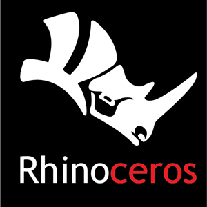
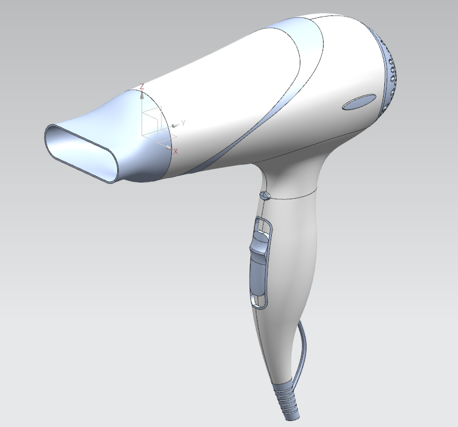
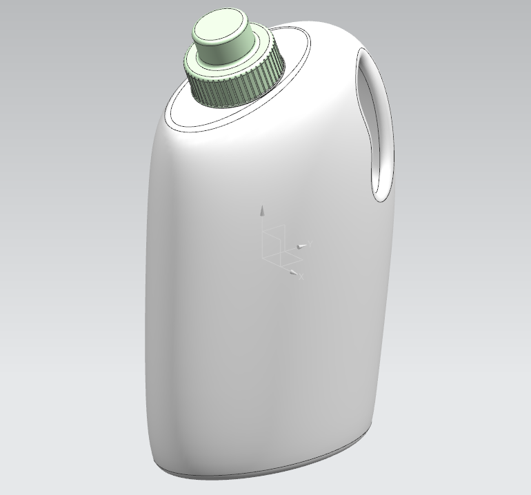
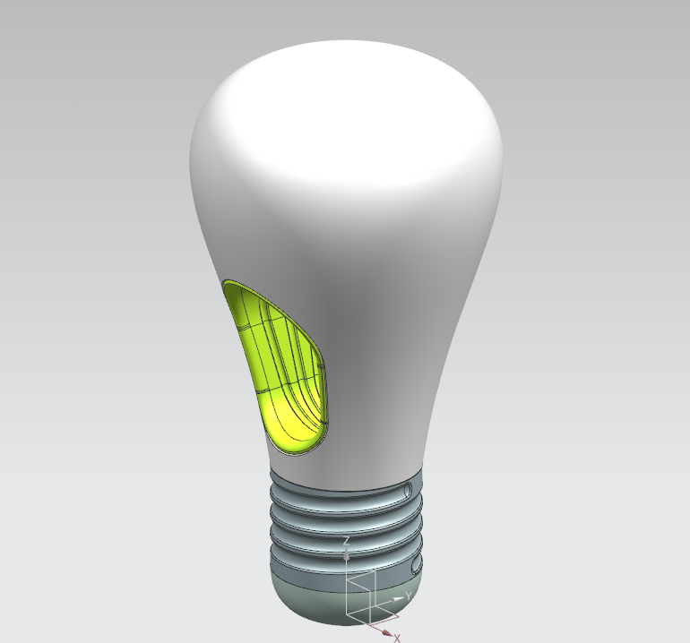

portfolio

RHINO
라이노 프로그램을 통해 작업한 결과물에 대한 포트폴리오입니다.
거치대 모델
라이노 프로그램을 통해 거치대를 모델링 했습니다.
직접 모델의 아이디어와 스케치 그리고 3D프로그램을 통해 모델링까지 진행한 작품입니다. 접이식 거치대로 더 넓은 화면의 스마트폰이나 패드를 올렸을 때에도 튼튼하게 거치할 수 있도록 제작한 작품입니다.
NX Ug
NX 프로그램을 통해 작업한 결과물에 대한 포트폴리오입니다.
NX를 사용한 디자인
NX프로그램을 이용하여 제작한 결과물입니다. 세제통, 헤어드라이기, led전구 등을 책을 보고 제작했습니다. 배워나가고 있는 중이라 따라 한 작품이지만 실력을 키워가고 있습니다.


